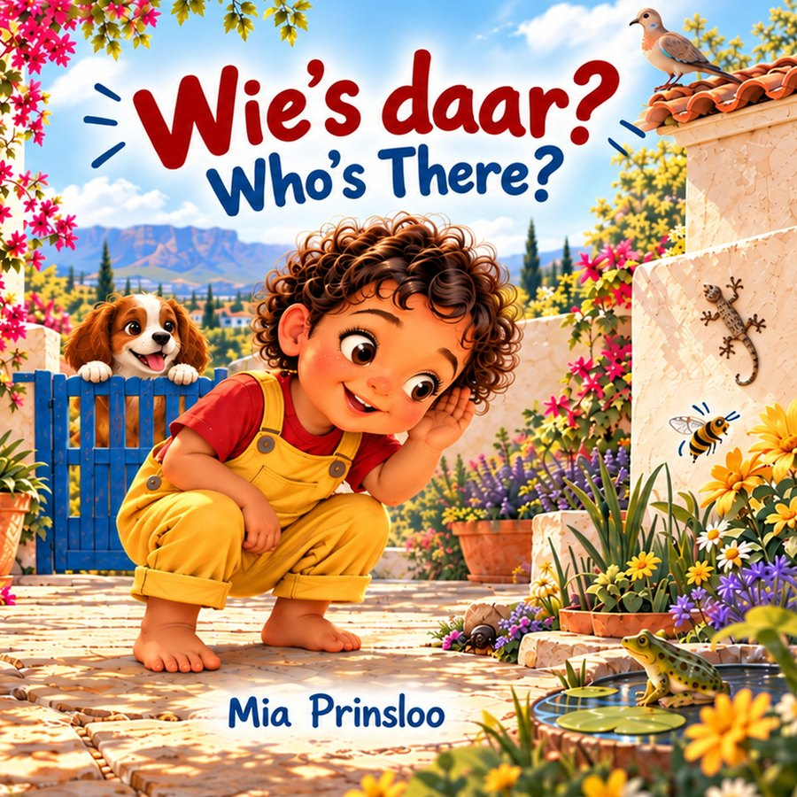
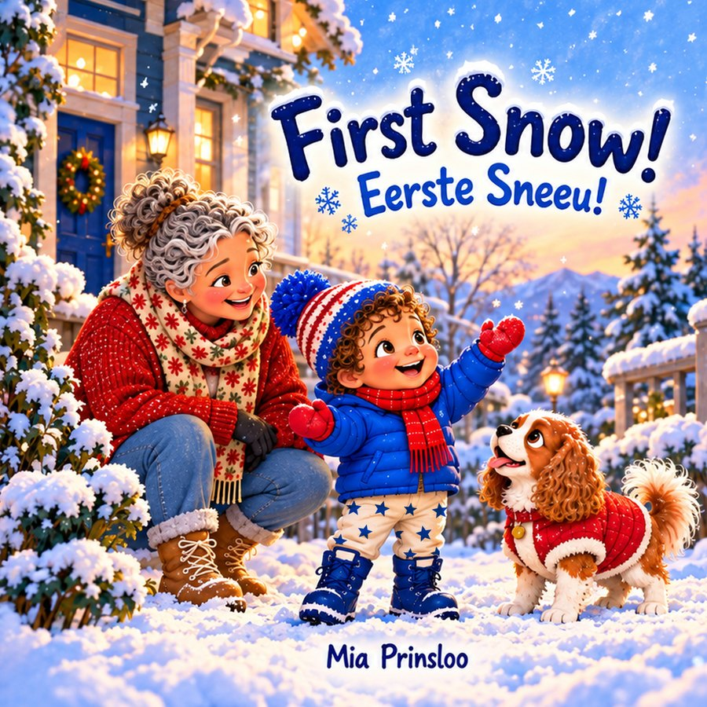
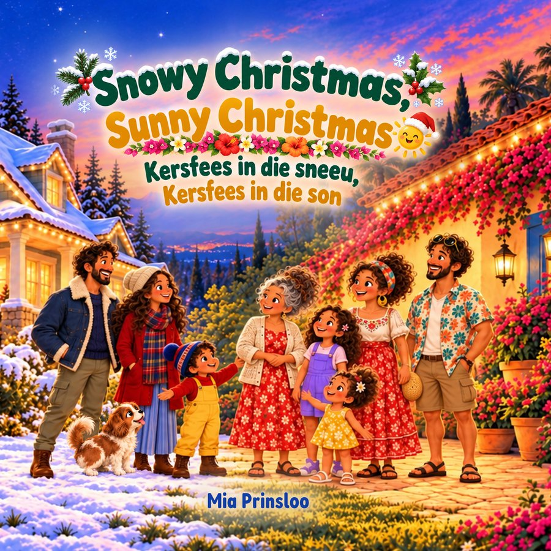
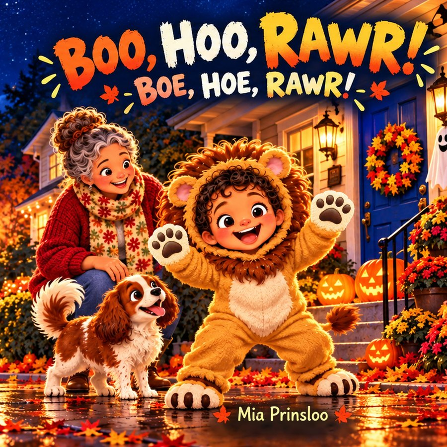
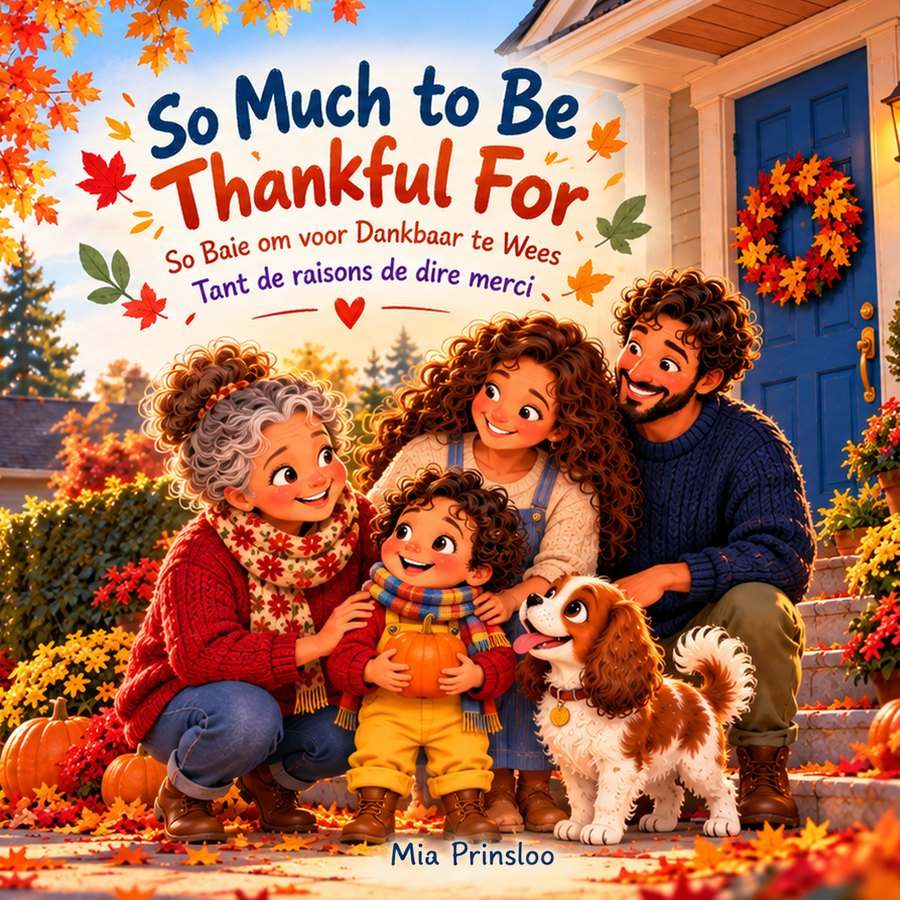
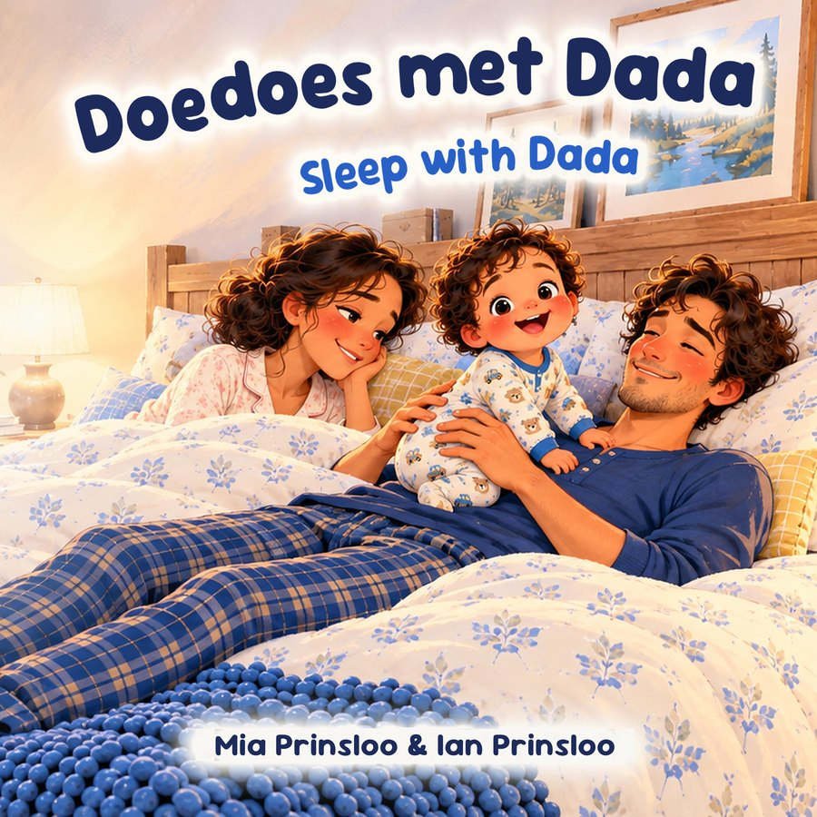
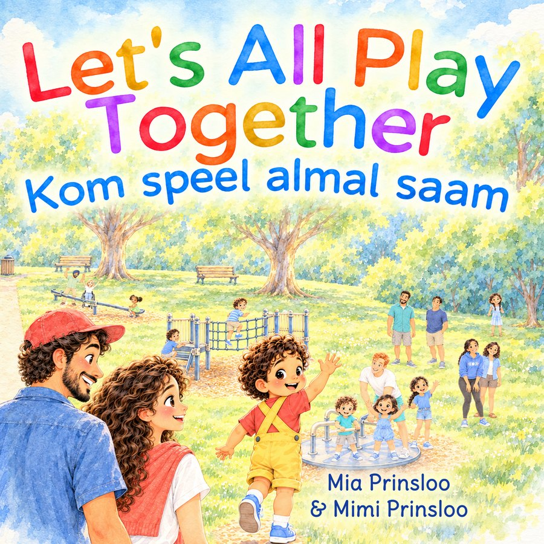

Animal soundsWie's daar? / Who's There?
Afrikaans first, with English underneath
A tiny beetle, a gecko on the wall, a frog by the pond and a very noisy hadeda: Milo discovers the sounds of a sunny Cape Town garden.
Find it on AmazonPicture books and colouring books for little ones. Colouring books for grown-ups.
Gentle stories about Milo, his family and Dog. Every book is in English with an Afrikaans translation (and sometimes French too).

Animal soundsAfrikaans first, with English underneath
A tiny beetle, a gecko on the wall, a frog by the pond and a very noisy hadeda: Milo discovers the sounds of a sunny Cape Town garden.
Find it on Amazon
WinterEerste Sneeu!
Milo wakes up to a white world. Boots on, coat on, mittens on, and out with Ouma and Dog into snow that is cold, soft and crunchy.
Find it on Amazon
ChristmasKersfees in die sneeu, Kersfees in die son
Milo has Christmas in the snow while Ouma and the family celebrate in the summer sun. Different on the outside, the same inside: for every family with someone they love far away.
Find it on Amazon
HalloweenBoe, Hoe, Rawr!
Milo the little lion follows every strange sound down a glowing Halloween street, just brave enough to find out each time. Gently spooky, never scary, with a cosy bedtime ending.
Find it on Amazon
ThanksgivingSo Baie om voor Dankbaar te Wees · Tant de raisons de dire merci
Crunchy leaves, a round pumpkin, Dog's wagging tail and a big hug from Ouma: a cosy first story about gratitude.
Find it on Amazon
BedtimeAfrikaans first, with English underneath
Mama is exhausted, so tonight it's Dada's turn. In the bed, on the couch and on the rug, Dada tries everything, but baby Milo is having far too much fun to sleep. A funny bedtime story for every parent who has tried absolutely everything.
Find it on Amazon Space
Space
English first, with Afrikaans underneath
With some cardboard, a roll of tape and a whole lot of imagination, Milo and Dog blast off past the Moon, the Sun, the planets and the stars. Ends with a solar system chart to explore together.
Find it on Amazon Travel
Travel
English first, with Afrikaans underneath
Milo is going on his very first airplane trip! He packs Teddy, watches the busy airport, goes through security and climbs aboard. Then it's up, up, up through the clouds, and someone very special is waiting at the end of the journey.
Find it on Amazon Boats
Boats
English first, with Afrikaans underneath
Milo discovers boats big and small: Dad's little racing dinghy, a tiny round ferry to the market with Mom, and the biggest ferry of all, out between green islands. And who lives on the water? Seals, gulls, dolphins... and WHALES!
Find it on Amazon
PlaygroundEnglish first, with Afrikaans underneath
It's a sunny day, and Milo is off to the playground with Mom and Dad! Swings, sandpit, slide, seesaw, climbing frame, roundabout: at every one there's a new friend to play with, and their family too. Come and play together!
Find it on AmazonAll the books are paperbacks. Each link opens Books2Read, which takes you to your own country's Amazon. It may say "Ebook" and show a Kindle button: tap it and it opens the paperback.